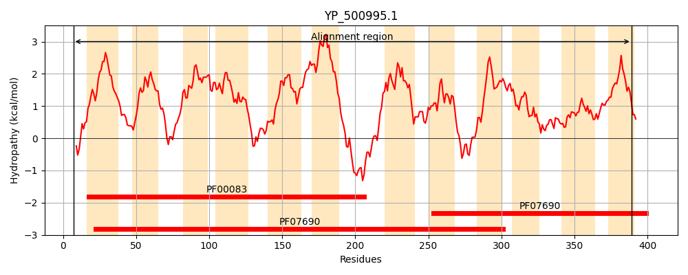
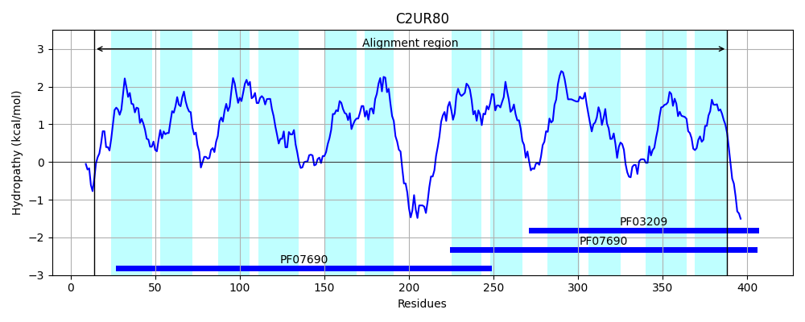

Hit Accession: C2UR80
Hit TCID: 2.A.1.46.5
Hit Description: gnl|BL_ORD_ID|2399 gnl|TC-DB|C2UR80|2.A.1.46.5 Quinolone resistence protein, major facilitator family transporter OS=Bacillus cereus Rock3-28 GN=bcere0019_7170 PE=4 SV=1
Mach Len: 383
e:0.000000
Query TMS Count : 12
Hit TMS Count: 12
TMS-Overlap Score: 10.100000
Predicted Substrates:CHEBI:23765;quinolone
BLAST Alignment:
Score: 482 , Bit scores: 190 bits, E-value: 2.1e-56, Alignment length: 383, Percentage identity: 28
Query: 7 LNKSPIFTKSFTINFLVNFIVYLCMYLLLVVIAGYSKQAFDASDSLAGLVVGLFIVGSLIGRFATGKFVNQIGPKRLLFIGLIALIITQLLYFIDGSLAFLIFVRLINGIATAVVTTATGTIAAYVTPVNRKSEGISLFSLSLVLGTAIGPFLGMLLITKYAIDLLFIICVILGILGLIISLFIKVDFEVTNNKTETNVIDKPRFSIHQFIAKEAIPVAVIMLLIGVTYASILTYLQAFALERHLVTAASYFFICYAIASLITRPIAGRLMDDKNENIIVYPAFIMLFLSFVCLISSYQSWLILLAGACLGLGYGNLSSAMQSIAIKVSPPIKYGIATSTFYVGLDAGVGFGPSFLGLFTHMFSYSEIFGFMAALAIITMLVY 389
+ + P++TK F N ++L +L+ + Y K+ S ++ GLVVG+F V +L R TG + + K +L IG ++ Y ++ L+ VR+++G + TT GT+ + + P R+ EG+ F LS + A+GP +G+ L+ Y ++LF+ + I+ LI++ +++ KT+ + FI ++A+ ++++L I + Y I +++ FA E + S FF+C A+A +TRP +G+L D K ++ P I+ F + L + +++A AC G G+G + A+Q+ I P + G+AT+TF+ D G+G G G H +Y+ ++ + + L I + +Y
Sbjct: 14 VKREPLWTKEFVALIFANLCMFLGFQMLIPTLPVYVKEIGGTSSNI-GLVVGMFTVAALFVRPLTGNALQKFNKKIILMIGTAICLLAMGSYLFASTIFLLLAVRILHGAGFGITTTTYGTVVSDLIPAARRGEGMGYFGLSGTIAMALGPLIGLWLMQAYNFNVLFLCALSCTIVSLILTKLLQIQ------KTKQPPKQSSDTFLDGFIERKALLPSLLILCITLMYGGIGSFITLFATEVGIADI-SLFFLCNALAIAVTRPFSGKLYDAKGHTFVIIPGVIITFAGIILLSYTTTIPSLVIAAACYGSGFGAIQPALQAWMIDRVAPHRRGVATATFFSAFDLGIGAGAIIFGFIAHFTNYATVYRYSSLLLIAFLFIY 388 | Protein Hydropathy Plots: |
|---|
|  |  |
Pairwise Alignment-Hydropathy Plot:
|
|---|
|